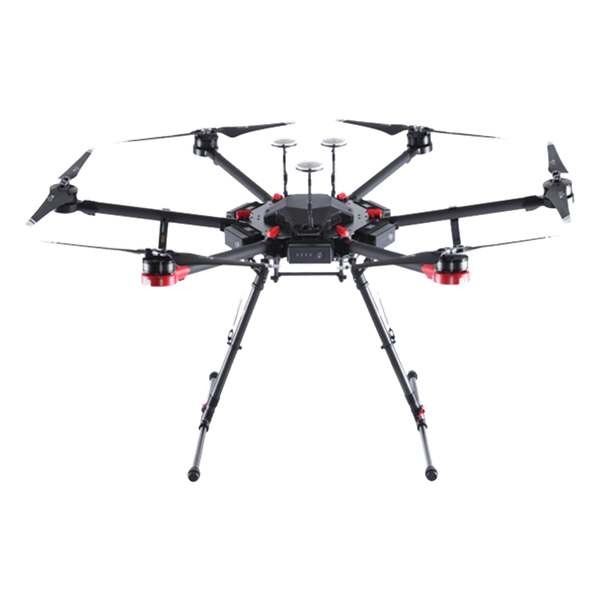

Un environnement de simulation non linéaire complet — corps rigide, propulsion électrique, atmosphère, vent, capteurs, estimation et commande — conçu pour développer et éprouver des lois de commande de vol avant tout essai sur le véhicule physique.
{{ p.text }}